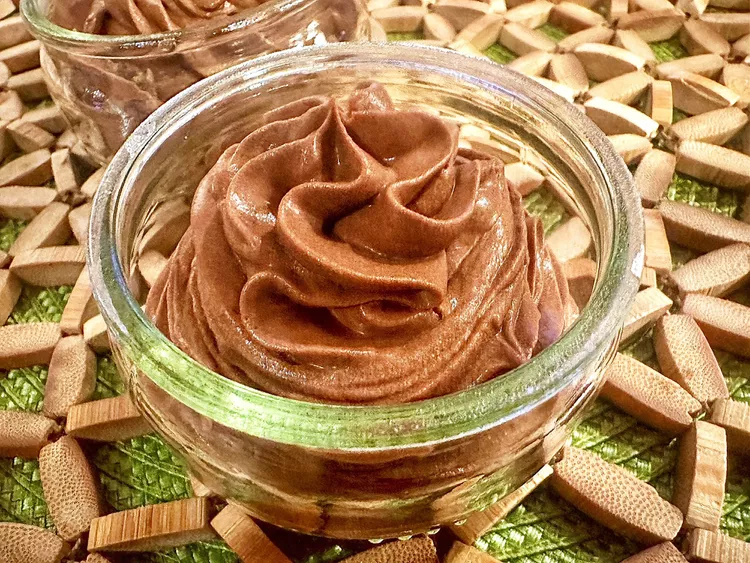

Choco Mousse

Description
This blender chocolate mousse, with espresso powder added to amp up the intensity of the chocolate flavor, is for all of you chocolate lovers–simple, easy, and delicious.
Ingredients
- 1 cup heavy ice cream
- 1/4 cup unsweetened cocoa powder
- 1/4 cup confectioner's sugar
- 1 and 1/2 teaspoon of instanpowder espresso
- 1/2 teaspon vanilla extract
- 1 pinch salt
Directions
- Combine heavy cream, cocoa powder, confectioner's sugar, espresso powder, vanilla extract, and salt in a powerful blender
- Blend for 30 seconds
- Lastly, Chill at least 1 hour to let flavors meld.